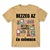

| ID | Név | Kép | Méret | Ár | Leírás | Készlet db |
|---|---|---|---|---|---|---|
| P001 | Retro gamer férfi póló |  | S | 6990 Ft | A pólódat kifordítva 30 fokon, szárítógép használata nélkül mosd ki, így vigyázva a 100% pamut szövet és a nyomat minőségére. ... Ez azért fontos, mert a magas hőfokú, száraz környezetben a centrifugális erő mellett megsérülne a minta. | 60 |
| P001 | Retro gamer férfi póló | S | 6990 Ft | A pólódat kifordítva 30 fokon, szárítógép használata nélkül mosd ki, így vigyázva a 100% pamut szövet és a nyomat minőségére. ... Ez azért fontos, mert a magas hőfokú, száraz környezetben a centrifugális erő mellett megsérülne a minta. | 60 | |
| P001 | Retro gamer férfi póló | S | 6990 Ft | A pólódat kifordítva 30 fokon, szárítógép használata nélkül mosd ki, így vigyázva a 100% pamut szövet és a nyomat minőségére. ... Ez azért fontos, mert a magas hőfokú, száraz környezetben a centrifugális erő mellett megsérülne a minta. | 70 | |
| P001 | Retro gamer férfi póló | S | 6990 Ft | A pólódat kifordítva 30 fokon, szárítógép használata nélkül mosd ki, így vigyázva a 100% pamut szövet és a nyomat minőségére. ... Ez azért fontos, mert a magas hőfokú, száraz környezetben a centrifugális erő mellett megsérülne a minta. | 80 | |
| P001 | Retro gamer férfi póló | S | 6990 Ft | A pólódat kifordítva 30 fokon, szárítógép használata nélkül mosd ki, így vigyázva a 100% pamut szövet és a nyomat minőségére. ... Ez azért fontos, mert a magas hőfokú, száraz környezetben a centrifugális erő mellett megsérülne a minta. | 55 | |
| P001 | Retro gamer férfi póló | S | 6990 Ft | A pólódat kifordítva 30 fokon, szárítógép használata nélkül mosd ki, így vigyázva a 100% pamut szövet és a nyomat minőségére. ... Ez azért fontos, mert a magas hőfokú, száraz környezetben a centrifugális erő mellett megsérülne a minta. | 68 | |
| P001 | Retro gamer férfi póló | S | 6990 Ft | A pólódat kifordítva 30 fokon, szárítógép használata nélkül mosd ki, így vigyázva a 100% pamut szövet és a nyomat minőségére. ... Ez azért fontos, mert a magas hőfokú, száraz környezetben a centrifugális erő mellett megsérülne a minta. | 90 | |
| P001 | Retro gamer férfi póló | S | 6990 Ft | A pólódat kifordítva 30 fokon, szárítógép használata nélkül mosd ki, így vigyázva a 100% pamut szövet és a nyomat minőségére. ... Ez azért fontos, mert a magas hőfokú, száraz környezetben a centrifugális erő mellett megsérülne a minta. | 60 | |
| P001 | Retro gamer férfi póló | S | 6990 Ft | A pólódat kifordítva 30 fokon, szárítógép használata nélkül mosd ki, így vigyázva a 100% pamut szövet és a nyomat minőségére. ... Ez azért fontos, mert a magas hőfokú, száraz környezetben a centrifugális erő mellett megsérülne a minta. | 60 |